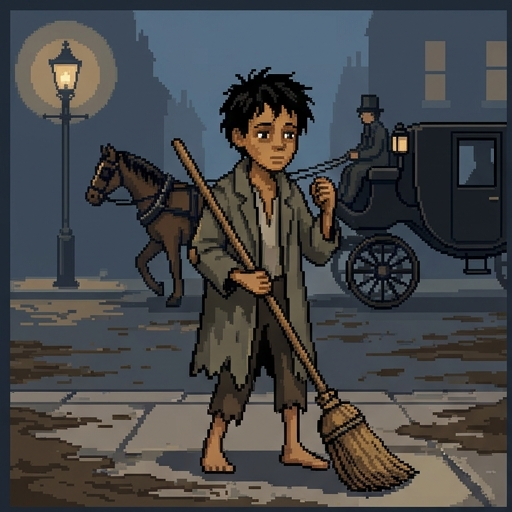
Move On
London in 1853, and your county today. Two places, one question: when may a community make you protect other people?
In Charles Dickens's novel Bleak House, a boy named Jo sweeps a muddy street crossing for coins, and the police keep telling him to "move on." You don't need to have read it. Everything you need is on the slides.
Use → (or Next) to advance and reveal points. F = fullscreen.
London, in 1853, and your county, today. Two places, one question. When may a community make you protect other people? In Charles Dickens's novel Bleak House, a boy named Jo sweeps a muddy street crossing for coins, and the police keep telling him to move on. You don't need to have read it. Everything you need is on the slides. Whenever it's your turn, I'll stop and wait for you.
Where You Stand Now
Rate each statement. There are no right answers, and you'll rate them again at the end.
Parents should decide whether their children are vaccinated, not the government.
If you can protect other people at very little cost to yourself, you have a duty to do it.
Schools should be allowed to turn away children who aren't vaccinated.
Religious objections to vaccines deserve more respect than other objections.
A vaccine law is only fair if the people who must follow it trust the people who made it.
Before we start, tell me where you stand. Rate each of these five statements. There are no right answers, and you'll rate them again at the end. Press Submit when you're done.
Saved. Now, let's meet the people in this story.
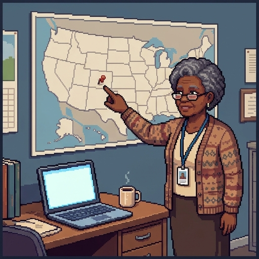
1853 and Now
Each part of this lesson starts with a scene from 1853, then turns to a real case from today.
Each part of this lesson starts with a scene from 1853, then turns to a real case from today. Here's who you'll meet.
- Jo has no home. He sweeps a street crossing for coins, and whenever he stops, a constable tells him to move on.
- Esther, a young housekeeper, and Charley, her young maid, find Jo sick on the road and bring him home.
- Dr. Woodcourt is a young doctor who works among the city's poor.
- You have just started at your county's health department. This morning, a child at Riverside Elementary was diagnosed with measles.
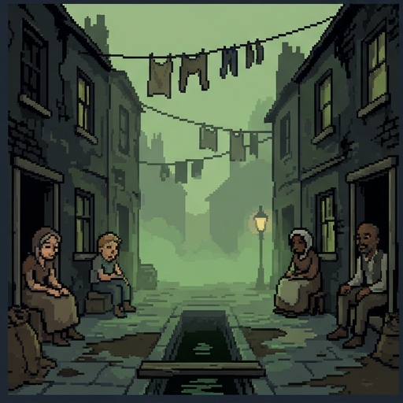
The Fever Travels
Jo sleeps in Tom-all-Alone's, a fever-ridden slum the city has left to rot. He falls sick, and Esther and Charley bring him home. Charley catches the fever from him, and Esther catches it nursing Charley.
Dickens warns that the slum's disease "shall work its retribution through every order of society."
In December 2014, visitors caught measles at Disneyland in California. By April 2015 it had reached 147 people in seven US states, with more cases in Mexico and Canada.
Measles travels with people, wherever they go next.
Disease doesn't stay where it starts. So a choice about it is never only about the person who makes it.
First, a scene from 1853. Jo sleeps in Tom-all-Alone's, a fever-ridden slum the city has left to rot. He falls sick, and Esther and Charley bring him home. Charley catches the fever from him, and Esther catches it nursing Charley. Dickens warns that the slum's disease shall work its retribution through every order of society. Now jump to December 2014. Visitors caught measles at Disneyland in California. By April 2015, it had reached a hundred and forty-seven people in seven states, with more cases in Mexico and Canada. Disease doesn't stay where it starts. So a choice about it is never only about the person who makes it.
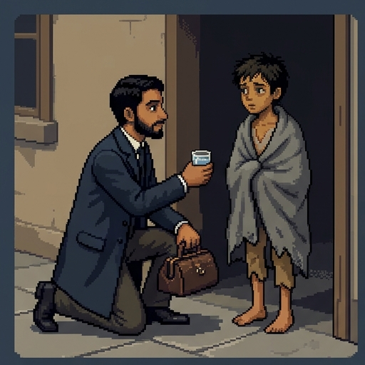
Public Health Is Different
When Dr. Woodcourt treats Jo, that is bedside medicine: one doctor, one patient. Public health works at a different scale.
When Doctor Woodcourt treats Jo, that's bedside medicine: one doctor, one patient. Public health works at a different scale.
- Its patient is a whole population, such as a city, a county, or a school.
- It works mostly by prevention: clean water, vaccines, and catching outbreaks early.
- The one acting is usually the government, which can make rules backed by law.
- The epidemiologist Geoffrey Rose noticed a puzzle. A measure that prevents a lot of disease in a population often does little for each person who takes part. He called it the prevention paradox.
Try It: One Case of Measles
Your turn. Riverside Elementary has four hundred children. Four can't be vaccinated for medical reasons, such as cancer treatment. Use the slider to set how many of the others are vaccinated, then press Run one outbreak. Try eighty, ninety, and ninety-five percent, and run each one more than once. Run twenty outbreaks shows you the pattern. When you're ready, press Continue.
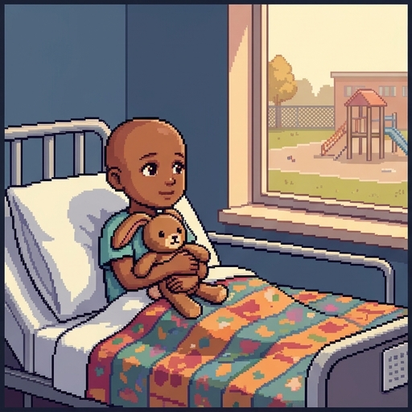
Herd Immunity
Here's what the explorer shows.
- When enough people are immune, a disease can't find new people to infect, so outbreaks die out. This is herd immunity.
- It protects people who can't be vaccinated, like babies too young for their first dose and children in cancer treatment. They depend on everyone else.
- Measles is one of the most contagious diseases. Health agencies aim for at least 95 in 100 children to have both vaccine doses.
- In 2025–26, 92.4% of US kindergartners had both doses, and a record 4.2% had exemptions. 2026 has the most US measles cases since 1991.
Herd immunity stops chains of infection, not every first exposure.
Fill In the Gaps
1. Against measles, health agencies aim for at least
95 in 100 children to have both vaccine doses.
2. Once enough people are immune, an outbreak
dies out.
3. A baby too young for the vaccine depends on
everyone else being immune.
4. US kindergarten vaccination against measles is now
below the level health agencies aim for.
Fill in each gap, then press Check.
Good. Now for a harder question. Is there a duty to vaccinate?
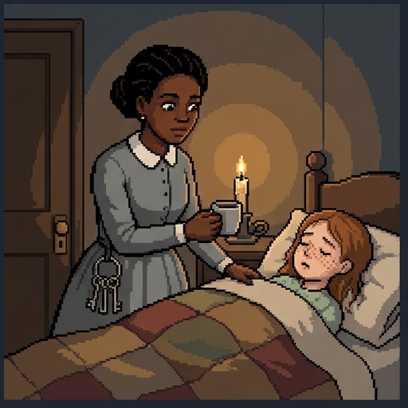
Charley Never Chose
Charley caught the fever from Jo after helping Esther bring him home. Nobody asked her whether she would take that risk.
A six-year-old in cancer treatment can't have the measles vaccine. If she catches measles at school, she never chose that risk either.
So here is the question. When your choice puts a risk on people who never agreed to it, do you have a duty to choose differently? Three arguments say yes.
Back to 1853. Charley caught the fever from Jo after helping Esther bring him home. Nobody asked her whether she'd take that risk. Today, a six-year-old in cancer treatment can't have the measles vaccine. If she catches measles at school, she never chose that risk either. So here's the question. When your choice puts a risk on people who never agreed to it, do you have a duty to choose differently? Three arguments say yes.
Society may limit your freedom only to prevent harm to others.
Argument 1: Harm to Others
The first argument comes from John Stuart Mill.
- John Stuart Mill's harm principle says society may limit your freedom only to stop you from harming others.
- Measles can cause pneumonia, brain swelling, and death. A child who catches it can pass it to someone who couldn't be protected.
- So refusing a vaccine isn't only about yourself, and a vaccine rule is the kind of rule the harm principle allows.
- The worry: one unvaccinated child adds only a tiny risk. Does a tiny risk count as harm?
Protecting everyone is a shared job, and each of us owes a fair share of it.
Argument 2: Fairness
The second argument is about fairness.
- The philosopher Angus Dawson points out that herd immunity is a public good: everyone nearby gets the benefit, whether or not they helped make it.
- A free rider takes the benefit and leaves the cost to others. Here the cost is a sore arm and a very small risk of side effects.
- Alberto Giubilini goes further. Protecting everyone is a shared job, and fairness says each person who can should do their fair share of it.
- This argument works even if one person's choice changes nothing. Leaving your share to others is unfair whether or not anyone is harmed.
Don't take part in harm done by many, even if your part makes no difference.
Argument 3: Clean Hands
The third argument answers an objection.
- An objection: "My one shot makes no difference. Measles spreads or doesn't, whatever I do."
- Jason Brennan, a libertarian philosopher who usually argues against government power, replies with a grim case. A squad of snipers all fire at a child at once. No single shot makes a difference, yet every sniper does wrong.
- His clean hands principle: you have a duty not to take part in collectively harmful activities, and this duty can sometimes be enforced.
- Staying unvaccinated is joining the group that, together, spreads measles to others. So, Brennan says, stay out of it, even though your part is tiny.
The Case Against Mandates
Many people who agree that vaccines work still object to laws that require them. Here are their strongest reasons.
Many people who agree that vaccines work still object to laws that require them. Here are their strongest reasons.
- Bodily integrity. What goes into your body is yours to decide, so requiring a medical procedure is a serious step.
- Parents' rights. Parents normally make their children's medical decisions. Peter Bradley (1999) argued this weighs against compulsion where most children are vaccinated anyway.
- Conscience. Some families object on religious or moral grounds. Forcing them to act against conscience is a real cost.
- As little force as possible. The philosopher Mark Navin argues that the state should use only as much coercion as it needs to keep herd immunity.
Which Argument?
Harm to others
Fairness
Clean hands
"Skip the shot and you could pass measles to a baby too young for it."
"Your freedom stops where it starts to harm other people."
"If you enjoy herd immunity, help pay its price."
"It's unfair to stay protected by everyone else's shots."
"Refusing the shot makes you part of a group that spreads measles. Stay out of it."
"A sniper can't excuse himself because the other shots would have killed anyway."
Each line gives a reason for vaccination. Which argument does it draw on: harm to others, fairness, or clean hands? Sort them, then press Check answers.
Right. Three different reasons for the same conclusion.
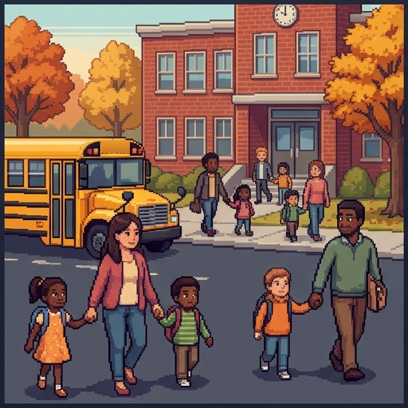
Decision Point: Is There a Duty?
Yes. Skipping it puts other children at risk.
Yes. It's unfair to rely on everyone else's shots.
Yes, but the government shouldn't force it.
No. It really is the parent's choice.
A parent at Riverside Elementary says: my child's one shot won't make a difference, and it's my choice. Does the parent have a moral duty to vaccinate? This one isn't graded. Pick the answer closest to your view, and read its note.
Notice the third answer. It grants the duty, and still resists the law. That's where much of the real disagreement about mandates sits. So how far may a health department go?
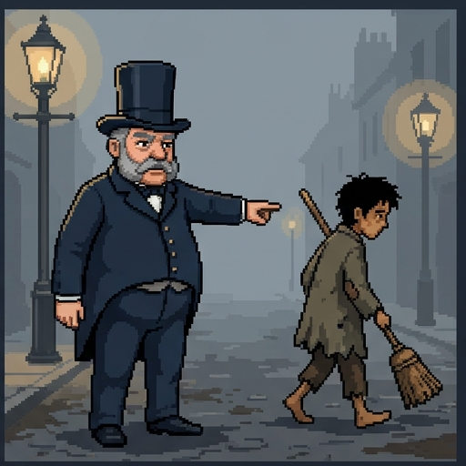
Move On
Whenever Jo stops, a constable tells him to move on. "But where?" Jo asks. "My instructions don't go to that," the constable replies.
Dickens calls "Move on!" "the one grand recipe" the authorities have for Jo.
You have a measles case at Riverside Elementary. You could send a letter home, offer free shots, fine families, or keep unvaccinated children home.
Doing nothing, or pushing a problem out of sight, is a choice too. The question is how much to do, and how to decide.
Back to 1853 again. Whenever Jo stops, a constable tells him to move on. But where, Jo asks. My instructions don't go to that, the constable replies. Dickens calls move on the one grand recipe the authorities have for Jo. Today, you have a measles case at Riverside Elementary. You could send a letter home, offer free shots, fine families, or keep unvaccinated children home. Doing nothing, or pushing a problem out of sight, is a choice too. The question is how much to do, and how to decide.
The Intervention Ladder
In 2007 the Nuffield Council on Bioethics, a British ethics body, ranked public health policies on a ladder. Higher rungs limit choice more, so they need stronger reasons.
- Eliminate choice. Vaccinate people against their will. US rules today use fines or exclusion instead.
- Restrict choice. Unvaccinated children stay home during an outbreak.
- Guide choice through disincentives. A fine, like the $5 fine the Supreme Court upheld in 1905.
- Guide choices through incentives. Ohio's 2021 lottery: $1 million prizes for vaccinated adults.
- Guide choices by changing the default. Book flu-shot appointments people can cancel.
- Enable choice. Free vaccines at school or the pharmacy.
- Provide information. Reminder letters and ad campaigns.
- Do nothing, or just monitor. Count the cases.
To keep it simple, this lesson groups the rungs above "do nothing" into four bands: inform or enable, change the default, incentive or disincentive, and restrict or eliminate choice.
In 2007, the Nuffield Council on Bioethics, a British ethics body, ranked public health policies on a ladder. Higher rungs limit choice more, so they need stronger reasons. From the top. Eliminate choice: vaccinate people against their will. US rules today use fines or exclusion instead. Restrict choice: unvaccinated children stay home during an outbreak. Guide choice through disincentives: a fine, like the five-dollar fine the Supreme Court upheld in 1905. Guide choices through incentives: Ohio's 2021 lottery, with million-dollar prizes for vaccinated adults. Guide choices by changing the default: book flu-shot appointments that people can cancel. Enable choice: free vaccines at school or the pharmacy. Provide information: reminder letters and ad campaigns. And at the bottom, do nothing, or just count the cases. To keep it simple, this lesson groups the rungs above doing nothing into four bands: inform or enable, change the default, incentive or disincentive, and restrict or eliminate choice.
Climb the Ladder
Inform or enable
Change the default
Incentive or disincentive
Restrict or eliminate choice
A text reminding parents a second dose is due
A free vaccine clinic in the school gym
A flu-shot appointment booked for every employee, who can cancel it
A $50 gift card for getting vaccinated this month
A $100 fine for parents who refuse
Unvaccinated children stay home until the outbreak ends
Health officers vaccinate a woman who refused
Where does each policy sit on the ladder? Sort each one into its band, then press Check answers.
Right. The higher the band, the stronger the reasons a policy needs. So how high is too high?
A policy that overrides liberty must pass tests before it is justified.
Four Questions Before You Climb
How high is too high? In 2002 the ethicists James Childress, Ruth Faden, and colleagues set out tests for a public health policy that overrides values like liberty. They list five. Two of them both ask whether a gentler way would do, so here they are as four questions.
- Will it work? (effectiveness)
- Are the benefits worth the burdens? (proportionality)
- Is there a gentler way that would also work? (necessity and least infringement)
- Has it been explained openly to the public? (public justification)
How high is too high? In 2002, the ethicists James Childress, Ruth Faden, and colleagues set out tests for a public health policy that overrides values like liberty. They list five. Two of them both ask whether a gentler way would do, so here they are as four questions. Will it work? Are the benefits worth the burdens? Is there a gentler way that would also work? And has it been explained openly to the public?
Which Question?
Will it work?
Worth the burdens?
A gentler way?
Explained openly?
"Measles spreads before the rash, so rash checks won't stop it."
"Tests show the herbal spray the county plans to hand out does nothing against measles."
"The rule would prevent one measles case, but it keeps all 400 children home for a month."
"Keeping only unvaccinated children home would work as well as closing the school."
"Reminders and a free clinic would work as well as fines."
"The board passed the rule in secret and won't say why."
Each objection to a proposed rule raises one of the four questions. Which one? Sort them, then press Check answers.
Right. Keep those four questions handy. You're about to use them.
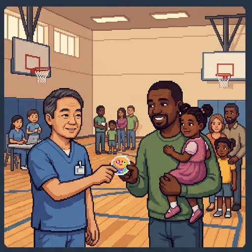
Decision Point: Riverside Elementary
Letters home and a free clinic at the school. Nothing more.
A free clinic, and unvaccinated children stay home for three weeks.
A free clinic, and a fine for families who still refuse.
Close the whole school until the outbreak ends.
Three more children at Riverside Elementary have measles. About one in ten of its children aren't vaccinated. What do you recommend? This one isn't graded. Pick the answer closest to your view, and read its note.
Now run each answer through the four questions. Most US health departments do something close to the second answer. They keep children who aren't immune away from the virus for a few weeks, and offer everyone a free shot.
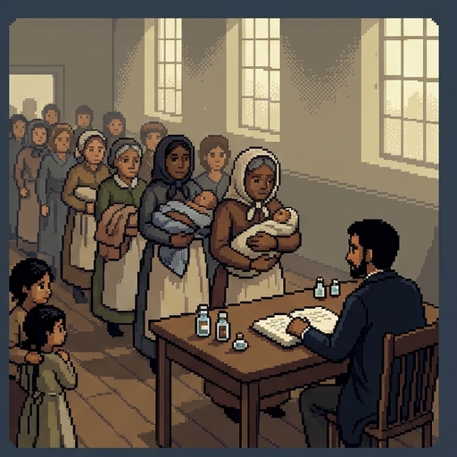
Excused
In 1853, England and Wales made smallpox vaccination compulsory for babies. Protests grew for decades. In 1898, parents who convinced a magistrate that they truly believed vaccination would harm their child were excused. The phrase conscientious objector came into common use in this fight.
Every US state requires some vaccines for school, and every state excuses children for medical reasons. Most also excuse families who object on religious grounds, and some excuse personal objections too.
An exemption excuses someone from a rule. Who should get one?
Being excused from a vaccine law is an old idea too. In 1853, England and Wales made smallpox vaccination compulsory for babies. Protests grew for decades. In 1898, parents who convinced a magistrate that they truly believed vaccination would harm their child were excused. The phrase conscientious objector came into common use in this fight. Today, every US state requires some vaccines for school, and every state excuses children for medical reasons. Most also excuse families who object on religious grounds, and some excuse personal objections too. An exemption excuses someone from a rule. So who should get one?
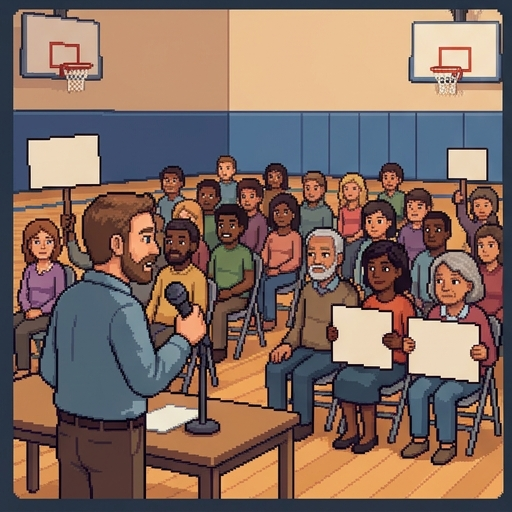
Three Kinds of Exemption
There are three kinds of exemption.
- Medical. A doctor says the vaccine would be dangerous for this child, for instance because of cancer treatment or a severe allergy.
- Religious. The family says its faith forbids the vaccine.
- Personal belief. The family objects for other reasons of conscience. Some states call this a philosophical exemption.
- Since 2015, California, New York, Maine, and Connecticut have ended non-medical exemptions. Courts have reopened the question in Mississippi and West Virginia.
Religious conscience gets no special claim, and no one gets burden-shifting exemptions.
Why Religion?
Why should religion get special treatment?
- Many states excuse families who object on religious grounds but not families with other sincere objections. The philosopher Brian Leiter asks why.
- He argues there is no good reason to treat religious conscience as more deserving than any other deep conviction.
- But he doesn't conclude that everyone should be excused. No one, religious or not, should get an exemption that shifts burdens onto other people.
- He names vaccine exemptions as an example. They shift the risk of disease onto other children.
Keep It, but Make It Harder
The philosopher Mark Navin and the historian Mark Largent propose a middle path (2017).
The philosopher Mark Navin and the historian Mark Largent propose a middle path.
- Keep non-medical exemptions, for religious and secular objectors alike, so families with real convictions aren't forced to act against them.
- But make an exemption take effort, such as an education session at the health department plus paperwork. They call this model inconvenience.
- The effort filters out parents who are merely unsure, while sincere objectors can still get an exemption.
- Michigan began requiring an education session in 2015, and its exemption rate fell.
Exemptions: What's True?
Every US state excuses children from school vaccine rules for medical reasons.
Leiter asks why religious objections should be excused when other sincere objections are not.
Navin and Largent would keep non-medical exemptions but make them take effort.
Leiter concludes that every sincere objector, religious or not, should be excused.
Navin and Largent would end every exemption except medical ones.
California and New York now excuse children whose parents object on personal grounds.
Which of these statements are true, as this lesson presents them? Check every one that is, then press Check answers.
Right. Now it's your turn to recommend a rule.
Decision Point: The Exemption Rule
Medical exemptions only.
Medical and religious exemptions.
Any sincere objection, after an education session.
Any parent who signs a form.
Your state legislature asks your health department to recommend a school exemption rule. What do you recommend? This one isn't graded. Pick the answer closest to your view, and read its note.
Each answer trades conscience against the safety of children who can't be vaccinated. Notice that Leiter's challenge bites hardest on the second answer. Why excuse religious objectors, and no one else?
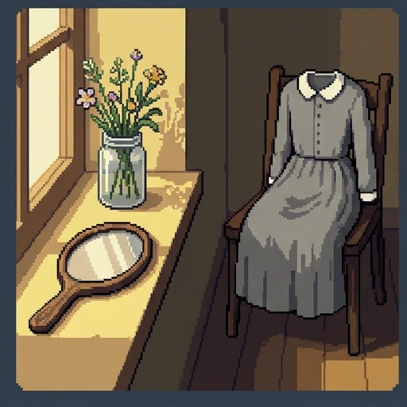
What the Community Owes Back
Esther recovers, but the fever leaves her face scarred. Jo dies. Dickens turns to his readers: "Dead, your Majesty. Dead, my lords and gentlemen."
Vaccines are very safe, but a very small number of people are seriously harmed. Under a 1986 law, a US program pays people harmed by routine vaccines without their having to prove anyone was at fault.
The ethicist Ross Upshur's principle of reciprocity covers this. If a community asks you to carry a small risk for everyone's sake, it owes you help if that risk comes due.
One last scene from 1853. Esther recovers, but the fever leaves her face scarred. Jo dies. Dickens turns to his readers: Dead, your Majesty. Dead, my lords and gentlemen. Today, vaccines are very safe, but a very small number of people are seriously harmed. Under a 1986 law, a US program pays people harmed by routine vaccines without their having to prove anyone was at fault. The ethicist Ross Upshur's principle of reciprocity covers this. If a community asks you to carry a small risk for everyone's sake, it owes you help if that risk comes due.
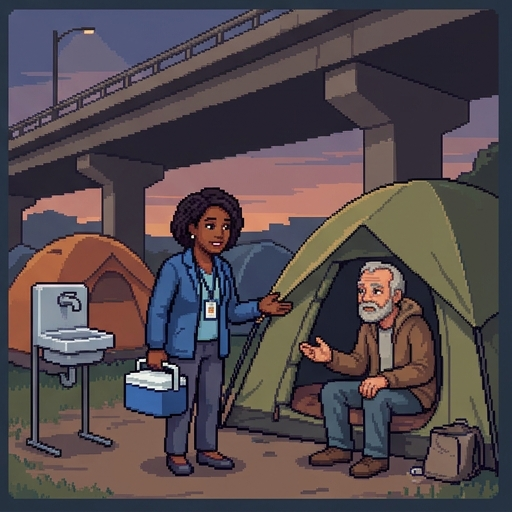
Trust, and Moving On Today
Public health also runs on trust.
- Public health asks people to act for each other's sake, so it depends on trust. It has to be honest about risks and give its reasons.
- Distrust has real causes. From 1932 to 1972, the US Public Health Service left hundreds of Black men with syphilis untreated, to study the disease.
- "Move on" still happens. In 2020 the CDC advised cities not to clear homeless camps during COVID unless housing was available, because clearing them can "break connections with service providers."
- When hepatitis A killed 20 people in San Diego in 2017, hitting people without homes hardest, the county took vaccines and handwashing stations to the streets.
Reciprocity and Trust
On Upshur's view, a community that asks people to carry a small risk for others owes them help if it comes due.
The 1986 program pays people seriously harmed by routine vaccines, with no need to prove fault.
The CDC warned that clearing homeless camps during COVID could break people's ties to service providers.
Distrust of public health agencies has no basis in their history.
Under the 1986 program, families must prove the vaccine maker was careless.
In 2020, the CDC advised cities to clear homeless camps quickly during COVID.
Which of these statements are true, as this lesson presents them? Check every one that is, then press Check answers.
Right. That was the last question.
Where You Stand Now
These are your ratings from the start. Rate each statement again.
These are your ratings from the start. Rate each statement again, then press Submit. If something moved, ask yourself what moved it.
Thank you.
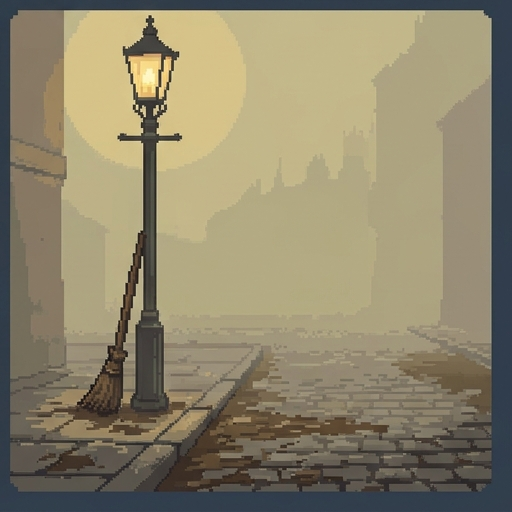
Summed Up
Here's the lesson, summed up.
- Public health cares for whole populations, mostly by prevention. Herd immunity protects people who can't protect themselves.
- A duty to vaccinate rests on three arguments: harm to others (Mill), fairness (Dawson and Giubilini), and clean hands (Brennan).
- From duty to policy: climb the intervention ladder only as far as the four questions allow.
- Exemptions and trust: decide who may opt out, and give back to people who carry the risk for everyone.
In 1853 the city's answer to Jo was "move on." Public health ethics asks what we owe each other instead.
For Further Reading
If you'd like to go further, here are some good places to start, each with a note on why it's worth your time. Thanks for playing.
- James F. Childress, Ruth R. Faden, et al., “Public Health Ethics: Mapping the Terrain,” Journal of Law, Medicine & Ethics 30, no. 2 (2002): 170–178. The source of the tests behind the four questions.
- Nuffield Council on Bioethics, Public Health: Ethical Issues (2007). The intervention ladder, with case studies that include vaccination.
- Alberto Giubilini, The Ethics of Vaccination (Palgrave Macmillan, 2019). A short book, free online, that makes the fair-share argument in full.
- Jason Brennan, “A Libertarian Case for Mandatory Vaccination,” Journal of Medical Ethics 44, no. 1 (2018): 37–43. The clean hands principle, from a critic of most government power.
- Mark Navin and Mark Largent, “Improving Nonmedical Vaccine Exemption Policies: Three Case Studies,” Public Health Ethics 10, no. 3 (2017): 225–234. The case for keeping exemptions but making them inconvenient.
About this lesson. Brendan Shea, PhD, wrote this lesson with help from AI tools. Claude (Anthropic) helped draft the text and code and check facts, and the illustrations were made with AI image generators. The narrator's voice is synthetic (Microsoft text-to-speech). The author reviewed everything and is responsible for any errors.